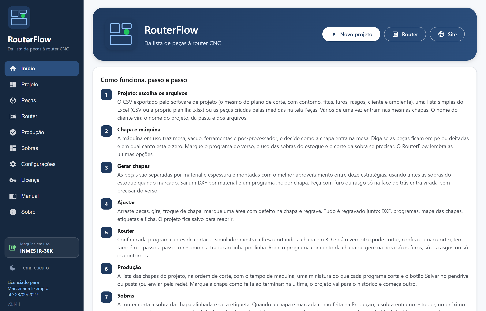
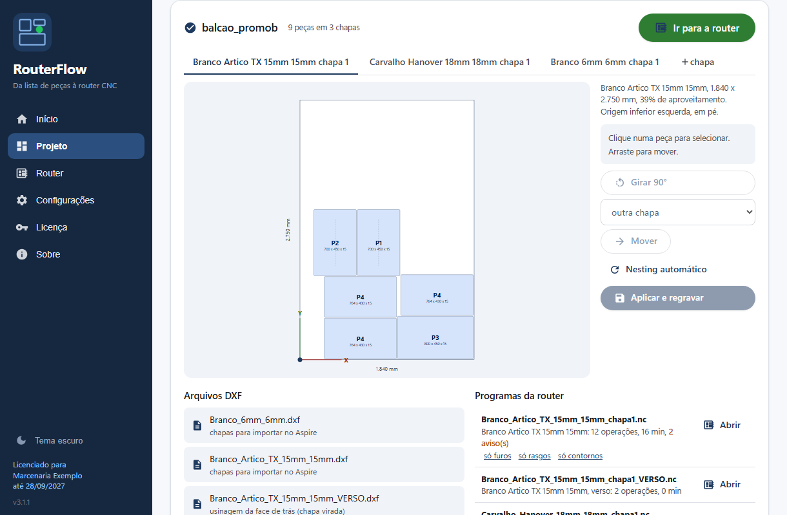
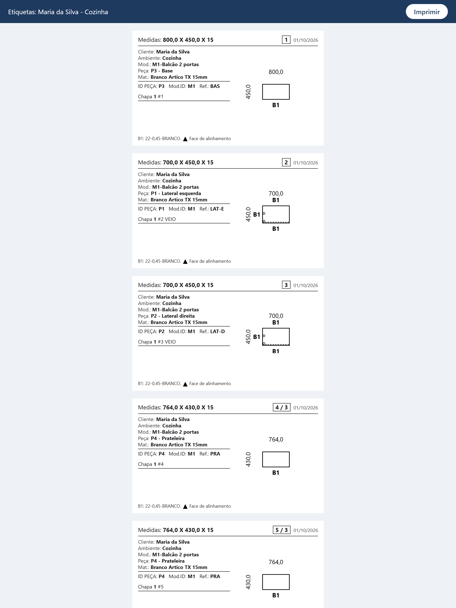
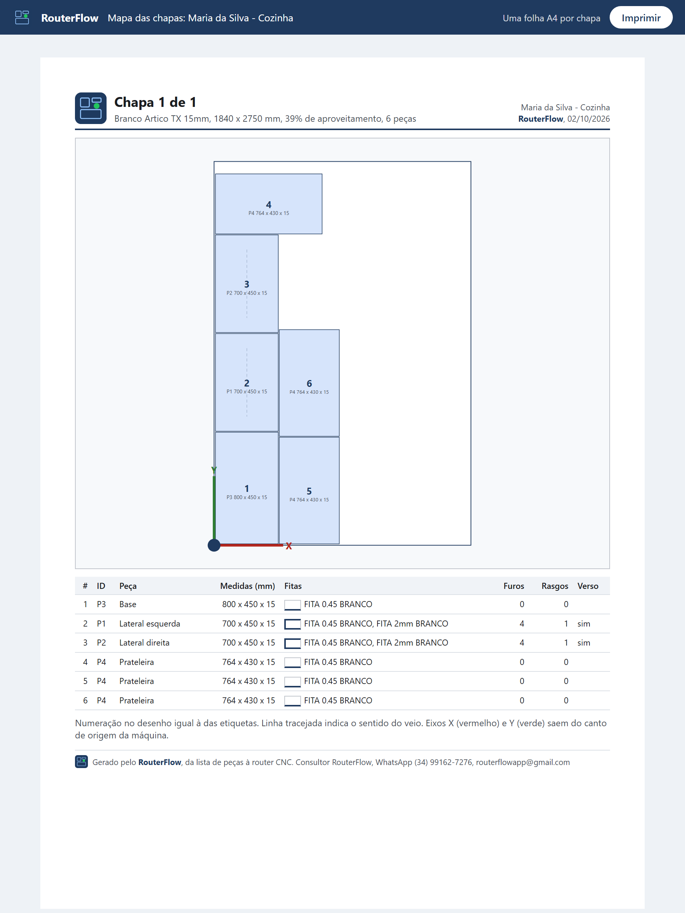
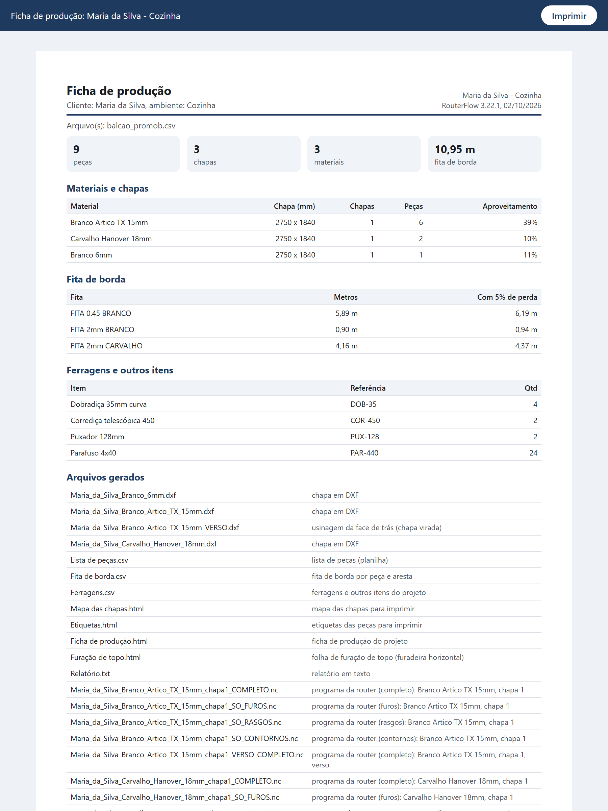
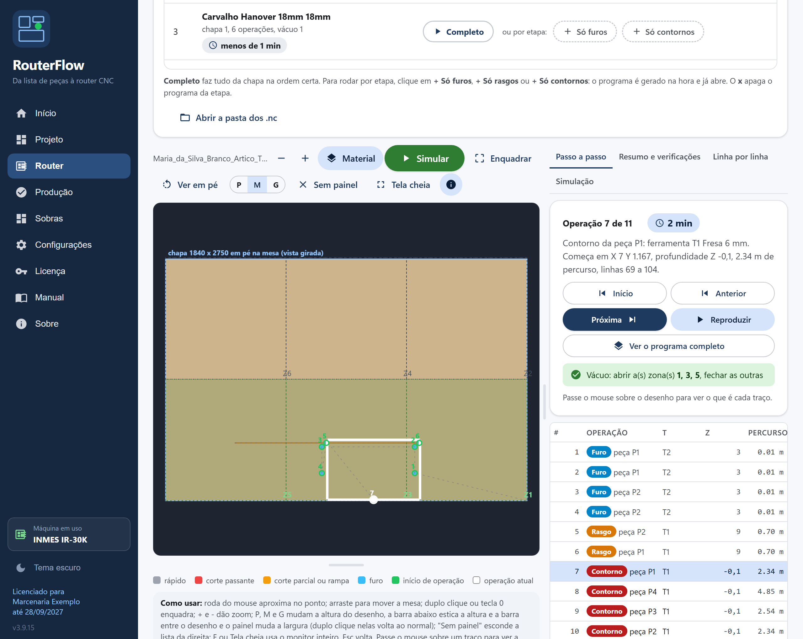
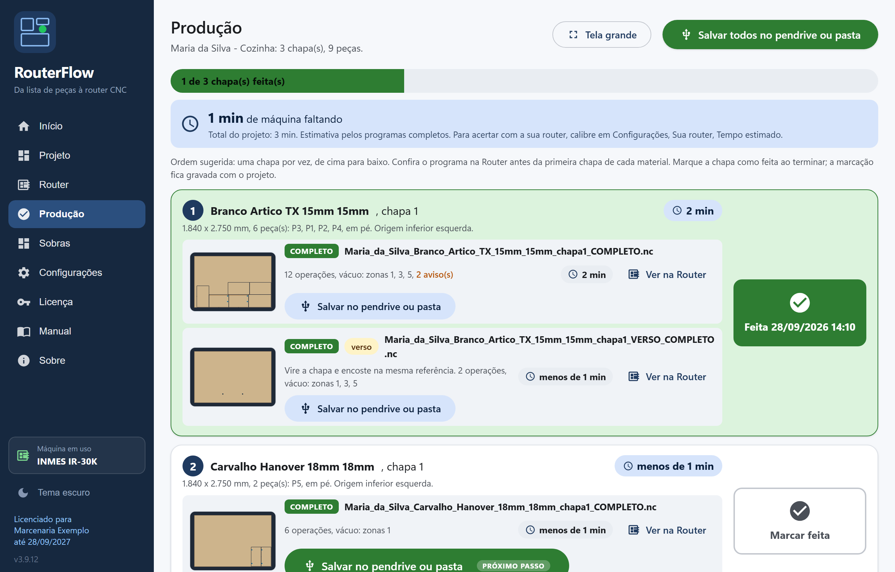
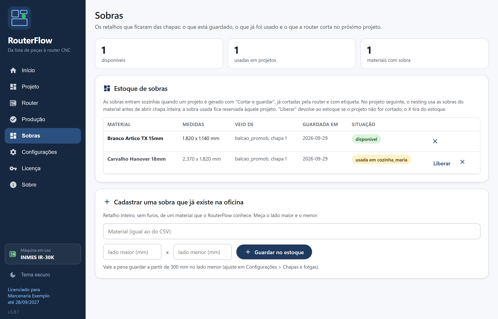
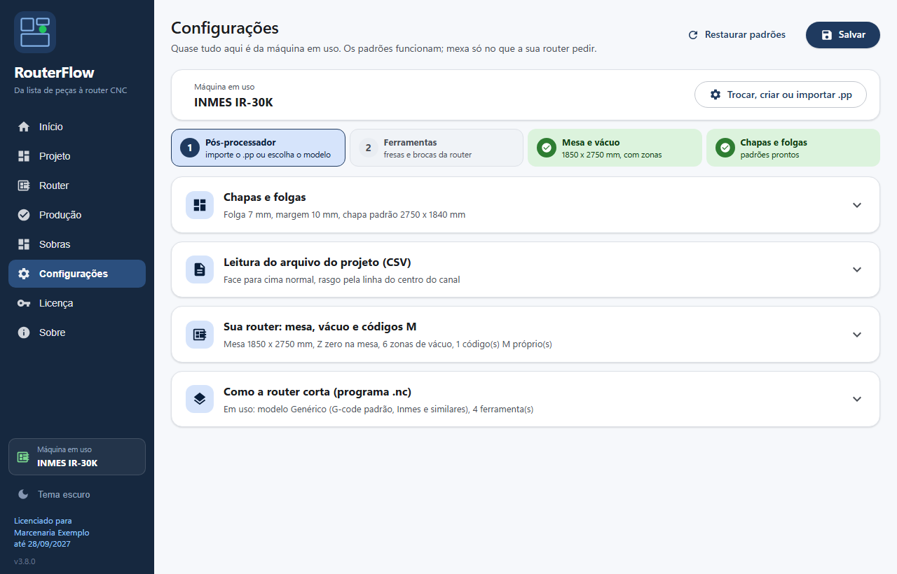

Software para marcenarias com router CNC
Da lista de peças à router CNC, em segundos.
Importe o CSV do seu software de projeto ou qualquer lista de peças. O RouterFlow monta as chapas de cada material com nesting, usa antes as sobras do estoque, gera o DXF com furos, rasgos e verso e o programa da router pronto para a sua máquina, com mapa das chapas, etiquetas e ficha de produção no nome do cliente. Sem plugin pago e sem internet na hora de cortar.
Windows 10 ou 11. Licença anual por computador. Instalação em minutos.

Por que o RouterFlow existe
A router CNC não lê o CSV nem a imagem que o software de projeto exporta. Para cortar, ela precisa de um DXF com o contorno, os furos e os rasgos de cada peça, e depois de um programa .nc feito num CAM. A saída oficial para isso costuma ser um plugin pago, com internet obrigatória e um segundo plugin só para a furação. Sem ele, alguém digita peça por peça no CAM, e é aí que entram os erros de medida, as chapas refeitas e o tempo perdido.
O RouterFlow resolve isso dentro da oficina. Ele lê a lista que o software de projeto já exporta de graça, com contorno, fitas de borda, furos, rasgos, cliente e ambiente, e entrega as chapas montadas, o DXF, o programa da router e os papéis do chão de fábrica. Quem usa o Aspire continua usando: o DXF sai com as layers no padrão de sempre.
Para quem é
Marcenarias e fábricas de móveis planejados que têm router CNC e recebem o projeto em CSV. Serve para quem corta MDF, MDP e compensado em chapa inteira, com ou sem mesa de vácuo.
O que substitui
O plugin pago de exportação em DXF, a digitação de peças no CAM e a planilha de etiquetas feita à mão. O Aspire continua opcional, pelo DXF.
O que entra
O CSV do plano de corte do software de projeto, com furos e rasgos, ou uma lista simples com nome, medidas, espessura, quantidade, material e veio.
Como funciona, passo a passo
O fluxo é o mesmo menu do programa: Projeto, Router, Produção e Sobras. Configura a máquina uma vez e esquece.
- 1
Projeto: escolha os arquivos
O CSV exportado pelo software de projeto (o mesmo do plano de corte) ou uma lista simples do Excel. Vários de uma vez entram nas mesmas chapas. O nome do cliente vira o nome do projeto, da pasta e dos arquivos.
- 2
Chapa e máquina
Em pé ou deitada, e em qual canto está o zero da máquina. A máquina em uso aparece no menu lateral, com mesa, vácuo, ferramentas e pós-processador. Marque o verso e o corte da sobra se precisar.
- 3
Gerar chapas
Peças separadas por material e espessura, montadas entre doze estratégias de nesting, usando primeiro as sobras do estoque. Sai um DXF por material e um programa .nc por chapa.
- 4
Ajustar
Arraste peças, gire, troque de chapa, marque uma área com defeito e regrave. DXF, programas, mapa, etiquetas e ficha são regravados juntos. O projeto fica salvo para reabrir.
- 5
Router
Confira cada programa antes de cortar: passo a passo sobre a mesa, resumo, verificações de segurança e tradução linha por linha. Furos, rasgos e contornos podem sair separados.
- 6
Produção
A lista das chapas na ordem de corte, com o programa de cada uma e o botão do pendrive. Marque a chapa como feita ao terminar. Tela grande para ler de longe.
- 7
Sobras
A router corta a sobra alinhada, sai a etiqueta e ela entra no estoque. No próximo projeto o nesting usa a sobra antes de abrir chapa inteira. Você decide o que guardar.

O que sai de cada projeto
Tudo com o nome do cliente e do ambiente, lido do próprio CSV. Pasta, arquivos e impressos seguem o mesmo padrão.
Programas da router (.nc)
Um .nc por chapa com furos, rasgos e contornos em sequência, abas e rampa de entrada, zonas de vácuo no comentário. Verso espelhado quando a peça tem usinagem atrás. Furos, rasgos e contornos separados se você preferir rodar por etapas.
DXF por material
Todas as chapas do material num arquivo só, já na orientação e na origem da sua mesa. Layers com nomes fixos para quem usa o Aspire ou outro CAM.
Etiquetas das peças
Cliente, ambiente, módulo, peça, material, IDs e código, medidas e o desenho da peça com as fitas de borda e a face de alinhamento. Oito por folha A4.
Mapa das chapas
Uma folha por chapa com as peças numeradas, medidas, sentido do veio e a sobra que fica. Fica ao lado da máquina para identificar cada peça na saída.
Ficha de produção
Materiais, chapas, aproveitamento, metros de fita por cor, ferragens do projeto, arquivos gerados e os avisos a conferir antes de cortar.
Listas em planilha
Lista de peças, fitagem por aresta e ferragens em CSV, para abrir no Excel ou no seu sistema.



Feito dentro da oficina
Nesting que aproveita a chapa
Doze combinações de estratégia por material, fica a que gasta menos chapa e deixa a maior sobra. Respeita veio, folga e margem, desvia de áreas com defeito e usa as sobras do estoque antes de abrir chapa inteira.
Editor de chapas
Origem em qualquer canto, chapa em pé ou deitada, eixos desenhados. Arraste, gire, troque peças de chapa, marque defeitos e regrave. O projeto fica salvo para reabrir e alterar.
Programa da router sem CAM
Furos, rasgos e contornos com deslocamento pelo raio da fresa, passes em profundidade, rampa de entrada, abas para segurar a peça e zonas de vácuo. Modo corte no ar para o primeiro teste.
Router passo a passo
Operação por operação sobre a mesa da máquina, tradução do G-code em português linha por linha, tempo estimado e verificações: rápido dentro da chapa, corte sem avanço, spindle desligado, fora da mesa.
Perfis de máquina
Cada router com sua mesa, vácuo, ferramentas e pós-processador. Troque de máquina pelo menu lateral, crie um perfil novo por cópia ou importe o arquivo .pp do Aspire. Modelos prontos para Inmes, Mach3, GRBL e Fanuc.
Produção e sobras
Modo operador com a lista de chapas, pendrive por chapa e marcação de feita. Gerenciamento de sobras: a router corta o retalho, sai etiqueta e ele entra no estoque para o próximo projeto.
Qualquer lista de peças
Além do CSV do software de projeto, aceita listas do Excel ou de outro programa: uma janela mostra as colunas do arquivo e você diz qual é qual. O RouterFlow lembra o mapeamento.
Vários projetos juntos
Selecione vários CSV de uma vez e as peças de todos entram nas mesmas chapas, com o nome do projeto no ID de cada peça.
Atualização automática
Cada versão nova é baixada e instalada pelo próprio programa. A licença é confirmada pela internet de vez em quando; na hora de cortar, não precisa de conexão.




Preço da licença
Licença anual, 1 computador
R$ 2.600/ano
- PIX à vista com 5% de desconto: R$ 2.470
- Cartão de crédito em até 12x, com o acréscimo da taxa da maquininha
- Uma cobrança só por ano: dá R$ 217 por mês, cerca de R$ 7 por dia
- Todas as atualizações do ano incluídas
- Suporte pelo WhatsApp
- Computador adicional da mesma empresa: R$ 1.300
Faça a conta
Oficina que corta 50 chapas por mês a R$ 280: cada 1% de aproveitamento a mais vale R$ 1.680 por ano. O nesting com doze estratégias e as sobras do estoque costumam render 3% sobre o encaixe manual, R$ 5.040 por ano.
Uma hora a menos de programação por projeto, em 8 projetos por mês, são R$ 3.840 por ano. Evitar metade das chapas refeitas por peça errada, mais R$ 1.920. São cerca de R$ 10.800 por ano de retorno para uma licença de R$ 2.600, que se paga em três meses. E isso sem contar o que você deixa de pagar em plugins e CAM.
| Aproveitamento da chapa (3%) | R$ 5.040 |
| Tempo de programação (8 h por mês) | R$ 3.840 |
| Retrabalho evitado | R$ 1.920 |
| Retorno por ano | R$ 10.800 |
| Licença por ano | R$ 2.600 |
Para comparar
O RouterFlow faz o trabalho de duas ferramentas. A primeira é o plugin de exportação em DXF do software de projeto: R$ 5.800 de adesão mais R$ 180 por mês, e ainda um segundo plugin para exportar a furação. A segunda é o CAM que transforma o DXF no programa da router, como o Aspire: licença à parte, treinamento, e alguém digitando os toolpaths de cada chapa.
Somando os plugins e o CAM, a adesão passa de R$ 16.000 e a mensalidade passa de R$ 500. O RouterFlow entrega os dois lados, do CSV ao .nc, por R$ 2.600 no ano, com nesting, sobras, etiquetas, mapa e ficha incluídos.
| Plugins de DXF e furação mais o CAM (adesão) | mais de R$ 16.000 |
| Mensalidades dos plugins e do CAM | mais de R$ 500 por mês |
| RouterFlow, tudo incluído | R$ 2.600 por ano |
Dúvidas frequentes
O RouterFlow funciona com o CSV do Promob?
Sim. Ele lê o CSV do plano de corte exportado pelo Promob, com o contorno de cada peça, as fitas de borda, os furos, os rasgos, o cliente e o ambiente. Não precisa de plugin pago nem de internet para exportar. Também aceita uma lista simples de peças de qualquer outro software, do Excel ou do Corte Certo.
Preciso do Aspire ou de outro CAM?
Não. O RouterFlow gera o programa .nc de cada chapa direto para a router, com furos, rasgos e contornos. Quem prefere continuar no Aspire ou em outro CAM usa o DXF por material, que sai com as layers no padrão de sempre.
Funciona na minha router?
O programa sai pelo pós-processador da sua máquina. Há modelos prontos para Inmes, Mach3, GRBL e Fanuc, e você pode importar o arquivo .pp do Aspire que já usa. O modo corte no ar serve para o primeiro teste com a fresa elevada, sem chapa.
Precisa de internet para usar?
Não para trabalhar. A licença é confirmada pela internet de vez em quando e as atualizações são baixadas pelo próprio programa, mas gerar chapas, DXF e programas funciona sem conexão.
Quanto custa?
R$ 2.600 por ano por computador, uma cobrança só por ano. No PIX à vista tem 5% de desconto, R$ 2.470. No cartão de crédito, em até 12x com o acréscimo da taxa da maquininha. Computador adicional da mesma empresa: R$ 1.300. Atualizações e suporte pelo WhatsApp incluídos.
Como ativo a licença?
Instale, abra a tela Licença e copie o código da máquina. Envie pelo WhatsApp com a razão social, o CNPJ, o e-mail e o telefone da empresa. Você recebe a chave, cola e clica em Ativar. Sem cadastro.
Quais os requisitos?
Windows 10 ou 11, 64 bits. O instalador cuida do componente WebView2 do Windows, se faltar. Funciona no computador do projeto e no computador da máquina.
Novidades de cada versão
O que chegou em cada atualização, da mais nova para a mais antiga. Quem já tem o RouterFlow recebe tudo isso sozinho.
Versão 3.8.4A chapa do tamanho que você quiser na tela29/09/2026
- No Projeto e na Router, a área do desenho agora tem três tamanhos (P, M e G) e uma barra logo abaixo para esticar à vontade. O tamanho fica guardado para a próxima vez.
- Na Router dá para esconder o painel da direita e abrir em tela cheia, como já era no editor de chapas. Ganhou também os botões de zoom.
- Duplo clique no desenho ajusta a chapa na tela. Teclas + e - dão zoom, 0 ajusta, F abre em tela cheia e Esc volta.
- Uma linha de dicas explica tudo isso embaixo do desenho. Se não precisar mais, o botão de informação esconde.
- Na tela Sobras dá para buscar por material ou projeto, filtrar só as disponíveis e perguntar "onde cabe uma peça de 600 x 400?". A lista mostra a área de cada sobra e quantos metros quadrados estão livres.
Versão 3.8.3Correções e melhorias internas29/09/2026
- Ajustes por dentro para o programa ficar mais estável. Nada muda no seu jeito de usar.
Versão 3.8.2Agora você fica sabendo o que mudou29/09/2026
- Esta lista de novidades. Toda vez que o RouterFlow atualizar, ele conta o que chegou de novo: um aviso na primeira abertura, um cartão no Início e o histórico completo na tela Sobre.
- O site ganhou a mesma seção, para quem quer espiar antes de atualizar.
Baixar a última versão
O instalador é o mesmo para instalar do zero e para atualizar. Depois de instalado, o programa se atualiza sozinho.
Procurando a versão mais recente...
Baixar o instalador (.exe)Windows 10 ou 11, 64 bits. O instalador cuida do componente WebView2 do Windows, se faltar.
Como instalar e ativar
- Baixe e execute o instalador. Se o Windows mostrar "O Windows protegeu o computador", clique em "Mais informações" e depois em "Executar assim mesmo". O aviso aparece para qualquer programa novo que ainda não tem reputação no Windows.
- Abra o RouterFlow, vá na tela Licença e copie o código da máquina.
- Envie o código pelo WhatsApp com a razão social, o CNPJ, o e-mail e o telefone da empresa. O botão da própria tela já monta a mensagem.
- Cole a chave recebida e clique em Ativar. Sem cadastro. Internet só de vez em quando, para confirmar a licença.
Fale com o suporte
Consultor RouterFlow: demonstração, licença, renovação e ajuda para configurar a sua máquina.
Atendimento em horário comercial. A chave costuma sair em poucos minutos depois da confirmação do pagamento.